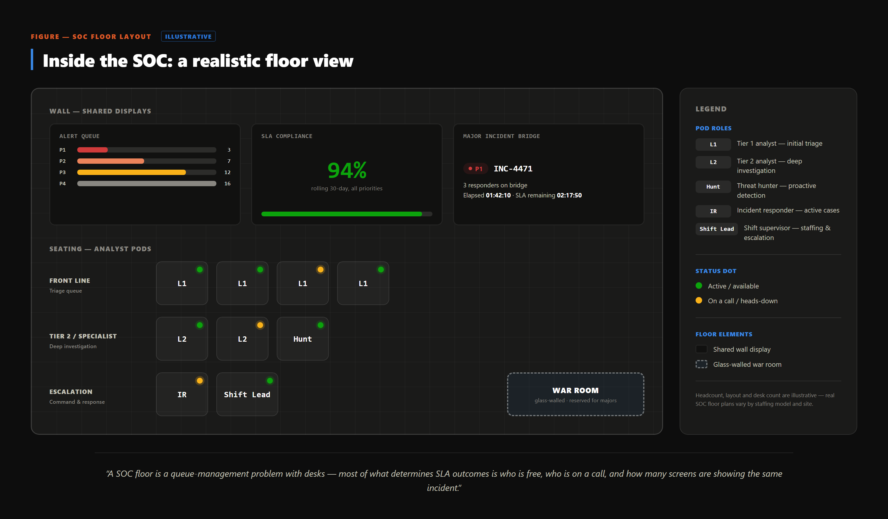

Every clock in this paper ends at a person on a finite roster and shift, not the constant capacity an SLA assumes. Many SLA failures are staffing failures in disguise.
A contract promising round-the-week coverage implies a roster staffed every hour of it. No standards body has solved that arithmetic: FIRST's CSIRT Services Framework catalogs the services a CSIRT provides but explicitly leaves staffing models, shift design, and roster logistics for each team to work out on its own.
Thinner night-and-weekend rosters and planned leave cut headcount on a schedule the contract never adjusts for.
Alerts-per-analyst-per-shift means little without the mix: a domain-admin compromise consumes hours, a benign positive a minute, yet both count as one alert. The SLA clock cannot tell an easy alert from a hard one — the roster can.
Headcount answers how many people, not who can work a case well — routing by queue position rather than specialty just adds investigation time, and ramp-up or certification pulls that same capacity off the floor.
A widely exploited vulnerability can multiply alert volume within hours, and every clock slows together — simply more open cases. A tool outage adds a second shock: its backlog lands all at once on recovery, on a roster sized for ordinary volume.

Isolated pods have no place to coordinate a multi-pod response; a war room does, at a real cost in analyst time.
If one correct SOC staffing structure existed, the largest vendors would have converged on it. They have not.
| Organization | Model | Structure | Rationale |
|---|---|---|---|
| Microsoft | Tiers + temporary surge team | Standing tiers handle triage/investigation/hunting; a temporary cross-functional team is assembled for major incidents (distinct from Sentinel's unrelated "Fusion" correlation feature) | Routine work suits tiers; incidents need cross-team coordination |
| CrowdStrike | Three-tier model + permanent hunt team | Tier 1 triages, Tier 2 remediates, Falcon OverWatch — a standing, dedicated team — hunts proactively | Matches workload to skill depth |
| Palo Alto Networks | Rejects the four-tier SOC | Cross-trained analysts handle cases end-to-end; automation absorbs first-pass work | Self-described: hand-offs cost more than specialization gained |
Microsoft layers a temporary cross-functional team atop fixed tiers, CrowdStrike keeps its tiers — including a permanent hunt team — fixed, and Palo Alto Networks removes tiers by default: the real three-way split is tiered-with-surge-team versus tiered-permanent versus tier-less-with-automation, none calling the others wrong.
None of this means staffing is unsolvable — the SLA and the roster simply run on different disciplines and timelines. A contract signed without visibility into coverage, concurrency, and surge planning has priced a promise without pricing what delivers it.
A roster is not elastic. A queue is. An SLA that assumes otherwise is measuring a promise the staffing plan was never sized to keep.